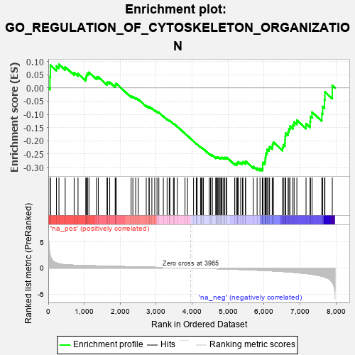
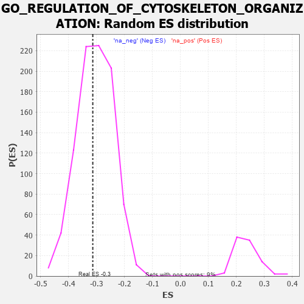

| | | Dataset | 7d |
| Phenotype | NoPhenotypeAvailable |
| Upregulated in class | na_neg |
| GeneSet | GO_REGULATION_OF_CYTOSKELETON_ORGANIZATION |
| Enrichment Score (ES) | -0.31338066 |
| Normalized Enrichment Score (NES) | -1.0258087 |
| Nominal p-value | 0.44701988 |
| FDR q-value | 0.8346843 |
| FWER p-Value | 1.0 |
Table: GSEA Results Summary

Fig 1: Enrichment plot: GO_REGULATION_OF_CYTOSKELETON_ORGANIZATION
Profile of the Running ES Score & Positions of GeneSet Members on the Rank Ordered List
| PROBE | GENE SYMBOL | GENE_TITLE | RANK IN GENE LIST | RANK METRIC SCORE | RUNNING ES | CORE ENRICHMENT | | 1 | TGFB3 | | | 49 | 2.654 | 0.0425 | No |
| 2 | RAC2 | | | 60 | 2.442 | 0.0861 | No |
| 3 | RHOH | | | 228 | 0.987 | 0.0830 | No |
| 4 | FSCN1 | | | 297 | 0.830 | 0.0895 | No |
| 5 | LRP1 | | | 470 | 0.648 | 0.0795 | No |
| 6 | ID1 | | | 719 | 0.555 | 0.0582 | No |
| 7 | RAE1 | | | 827 | 0.524 | 0.0542 | No |
| 8 | RCC1 | | | 1043 | 0.475 | 0.0355 | No |
| 9 | MEF2C | | | 1054 | 0.473 | 0.0430 | No |
| 10 | FZD10 | | | 1065 | 0.470 | 0.0503 | No |
| 11 | CDK10 | | | 1092 | 0.465 | 0.0556 | No |
| 12 | NCK2 | | | 1131 | 0.458 | 0.0591 | No |
| 13 | TBCD | | | 1338 | 0.422 | 0.0407 | No |
| 14 | FKBP4 | | | 1390 | 0.412 | 0.0417 | No |
| 15 | DRG1 | | | 1633 | 0.368 | 0.0177 | No |
| 16 | TPPP | | | 1646 | 0.365 | 0.0229 | No |
| 17 | TPX2 | | | 1708 | 0.355 | 0.0216 | No |
| 18 | SMAD4 | | | 1860 | 0.326 | 0.0084 | No |
| 19 | NUP62 | | | 1871 | 0.324 | 0.0130 | No |
| 20 | PAK3 | | | 1889 | 0.322 | 0.0168 | No |
| 21 | WASF1 | | | 2303 | 0.259 | -0.0310 | No |
| 22 | BCAS3 | | | 2352 | 0.253 | -0.0325 | No |
| 23 | MET | | | 2430 | 0.240 | -0.0379 | No |
| 24 | KAT2B | | | 2502 | 0.226 | -0.0428 | No |
| 25 | SLIT2 | | | 2724 | 0.195 | -0.0673 | No |
| 26 | FER | | | 2803 | 0.183 | -0.0739 | No |
| 27 | BRK1 | | | 2805 | 0.183 | -0.0707 | No |
| 28 | DAPK3 | | | 2880 | 0.169 | -0.0770 | No |
| 29 | XPO1 | | | 2960 | 0.156 | -0.0842 | No |
| 30 | WNT4 | | | 3023 | 0.146 | -0.0894 | No |
| 31 | MAP2 | | | 3074 | 0.140 | -0.0932 | No |
| 32 | TWF1 | | | 3199 | 0.123 | -0.1067 | No |
| 33 | SMAD3 | | | 3303 | 0.105 | -0.1179 | No |
| 34 | FMN1 | | | 3363 | 0.095 | -0.1237 | No |
| 35 | GMFB | | | 3381 | 0.091 | -0.1241 | No |
| 36 | CDK5 | | | 3480 | 0.080 | -0.1351 | No |
| 37 | FES | | | 3501 | 0.077 | -0.1363 | No |
| 38 | MAPK3 | | | 3589 | 0.062 | -0.1462 | No |
| 39 | SPAST | | | 3801 | 0.027 | -0.1726 | No |
| 40 | NEK2 | | | 3871 | 0.016 | -0.1811 | No |
| 41 | MCPH1 | | | 4039 | -0.014 | -0.2021 | No |
| 42 | MTOR | | | 4114 | -0.025 | -0.2110 | No |
| 43 | ABL1 | | | 4125 | -0.027 | -0.2118 | No |
| 44 | CRK | | | 4139 | -0.031 | -0.2129 | No |
| 45 | ARPC2 | | | 4232 | -0.047 | -0.2237 | No |
| 46 | ARL2 | | | 4254 | -0.050 | -0.2255 | No |
| 47 | WNT11 | | | 4282 | -0.056 | -0.2279 | No |
| 48 | BAG4 | | | 4314 | -0.061 | -0.2307 | No |
| 49 | EPS8 | | | 4474 | -0.088 | -0.2493 | No |
| 50 | ILK | | | 4510 | -0.096 | -0.2520 | No |
| 51 | ABI2 | | | 4554 | -0.106 | -0.2555 | No |
| 52 | APC | | | 4558 | -0.107 | -0.2539 | No |
| 53 | ARPC3 | | | 4659 | -0.129 | -0.2643 | No |
| 54 | CHMP3 | | | 4660 | -0.129 | -0.2619 | No |
| 55 | LIMK1 | | | 4684 | -0.136 | -0.2624 | No |
| 56 | ARF6 | | | 4704 | -0.140 | -0.2622 | No |
| 57 | WASF3 | | | 4730 | -0.145 | -0.2627 | No |
| 58 | POC1A | | | 4768 | -0.151 | -0.2647 | No |
| 59 | FLII | | | 4795 | -0.156 | -0.2651 | No |
| 60 | CEP97 | | | 4812 | -0.160 | -0.2642 | No |
| 61 | WDR1 | | | 4824 | -0.163 | -0.2626 | No |
| 62 | DLG1 | | | 4860 | -0.169 | -0.2640 | No |
| 63 | MARK2 | | | 4899 | -0.177 | -0.2655 | No |
| 64 | CAPZB | | | 4908 | -0.179 | -0.2633 | No |
| 65 | CHMP5 | | | 4952 | -0.188 | -0.2653 | No |
| 66 | ARAP1 | | | 4963 | -0.191 | -0.2631 | No |
| 67 | HDAC6 | | | 5183 | -0.244 | -0.2864 | No |
| 68 | GPSM2 | | | 5228 | -0.252 | -0.2874 | No |
| 69 | SSH1 | | | 5254 | -0.258 | -0.2859 | No |
| 70 | PICK1 | | | 5265 | -0.263 | -0.2823 | No |
| 71 | CEP70 | | | 5282 | -0.267 | -0.2794 | No |
| 72 | EPHA1 | | | 5349 | -0.285 | -0.2826 | No |
| 73 | PLK4 | | | 5397 | -0.295 | -0.2832 | No |
| 74 | LATS1 | | | 5412 | -0.298 | -0.2795 | No |
| 75 | STIL | | | 5483 | -0.314 | -0.2826 | No |
| 76 | CEP76 | | | 5485 | -0.315 | -0.2770 | No |
| 77 | TTBK2 | | | 5700 | -0.376 | -0.2973 | No |
| 78 | BBS4 | | | 5806 | -0.407 | -0.3032 | No |
| 79 | ARPC4 | | | 5886 | -0.430 | -0.3054 | Yes |
| 80 | DCTN1 | | | 5950 | -0.454 | -0.3050 | Yes |
| 81 | ACTN2 | | | 5960 | -0.458 | -0.2978 | Yes |
| 82 | CNTRL | | | 5961 | -0.459 | -0.2893 | Yes |
| 83 | CENPJ | | | 5968 | -0.460 | -0.2817 | Yes |
| 84 | JMY | | | 6023 | -0.479 | -0.2797 | Yes |
| 85 | CKAP5 | | | 6032 | -0.482 | -0.2719 | Yes |
| 86 | RAC1 | | | 6036 | -0.484 | -0.2634 | Yes |
| 87 | ADD2 | | | 6046 | -0.487 | -0.2556 | Yes |
| 88 | EVL | | | 6052 | -0.490 | -0.2472 | Yes |
| 89 | PLK1 | | | 6082 | -0.500 | -0.2417 | Yes |
| 90 | DBNL | | | 6084 | -0.501 | -0.2327 | Yes |
| 91 | GBA2 | | | 6136 | -0.515 | -0.2297 | Yes |
| 92 | ROCK1 | | | 6152 | -0.520 | -0.2221 | Yes |
| 93 | TPM1 | | | 6226 | -0.545 | -0.2213 | Yes |
| 94 | CDC42 | | | 6236 | -0.548 | -0.2124 | Yes |
| 95 | SVIL | | | 6259 | -0.558 | -0.2050 | Yes |
| 96 | TRPV4 | | | 6515 | -0.668 | -0.2252 | Yes |
| 97 | KANK1 | | | 6536 | -0.678 | -0.2152 | Yes |
| 98 | CLN3 | | | 6580 | -0.699 | -0.2079 | Yes |
| 99 | ARF1 | | | 6583 | -0.701 | -0.1953 | Yes |
| 100 | ALMS1 | | | 6590 | -0.704 | -0.1831 | Yes |
| 101 | TPR | | | 6597 | -0.709 | -0.1708 | Yes |
| 102 | CLIP1 | | | 6667 | -0.746 | -0.1659 | Yes |
| 103 | PAK1 | | | 6691 | -0.757 | -0.1549 | Yes |
| 104 | GSK3B | | | 6719 | -0.768 | -0.1443 | Yes |
| 105 | SPEF1 | | | 6801 | -0.815 | -0.1396 | Yes |
| 106 | FHOD3 | | | 6835 | -0.834 | -0.1285 | Yes |
| 107 | ESPN | | | 6911 | -0.873 | -0.1220 | Yes |
| 108 | COTL1 | | | 7166 | -1.046 | -0.1351 | Yes |
| 109 | CIB1 | | | 7280 | -1.152 | -0.1283 | Yes |
| 110 | PARP3 | | | 7289 | -1.158 | -0.1081 | Yes |
| 111 | CYLD | | | 7333 | -1.206 | -0.0914 | Yes |
| 112 | KANK3 | | | 7605 | -1.559 | -0.0973 | Yes |
| 113 | PKD1 | | | 7628 | -1.611 | -0.0705 | Yes |
| 114 | TRPM2 | | | 7680 | -1.712 | -0.0455 | Yes |
| 115 | MDM1 | | | 7691 | -1.742 | -0.0148 | Yes |
| 116 | CAV3 | | | 7896 | -2.739 | 0.0095 | Yes |
Table: GSEA details [plain text format]

Fig 2: GO_REGULATION_OF_CYTOSKELETON_ORGANIZATION: Random ES distribution
Gene set null distribution of ES for GO_REGULATION_OF_CYTOSKELETON_ORGANIZATION